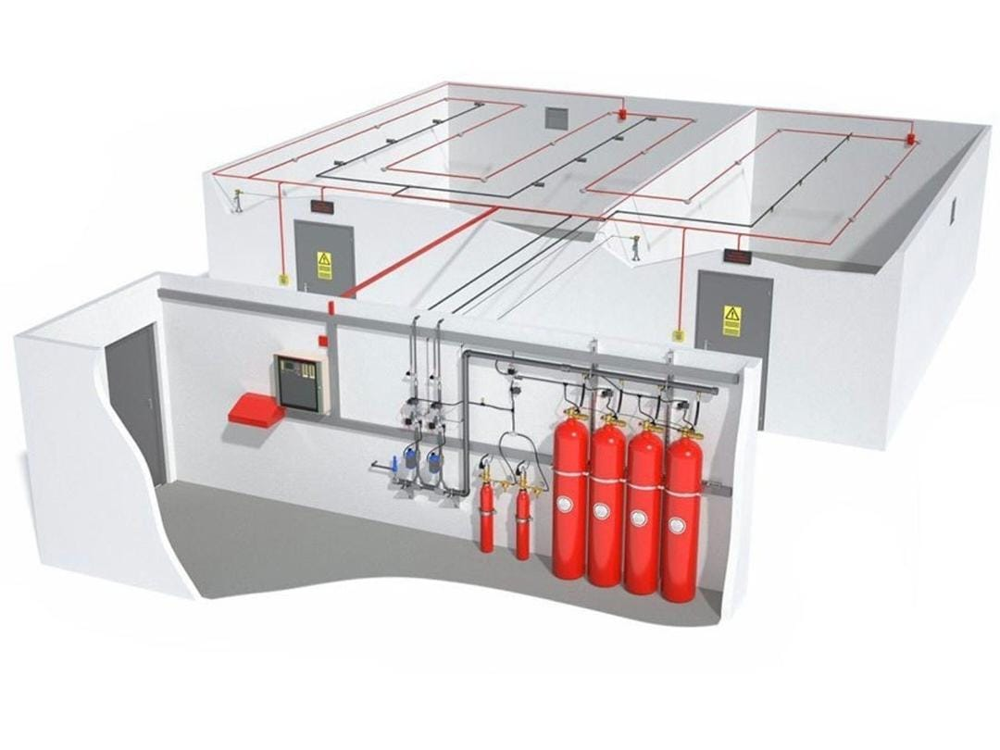

Specialist Fire Protection Engineering
- Assistance to Project Architects at sktech plan stage in identifying the overall Fire Safety design concepts to be adapted with emphasis on the principal item being the provision of emergancy escape routes.
- To determine the overall Fire Systems design criteria to ensure adequate provisions for Fire Fighting and Control in the spread of smoke.
- Preparation of Fire Plans and submission to Council , together with Rational Design documentation (if required).
- Obtain the approval of the Local Fire Authorities.
- Attendance at Design and any other Project Meetings, when required.
Back